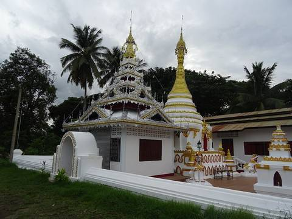
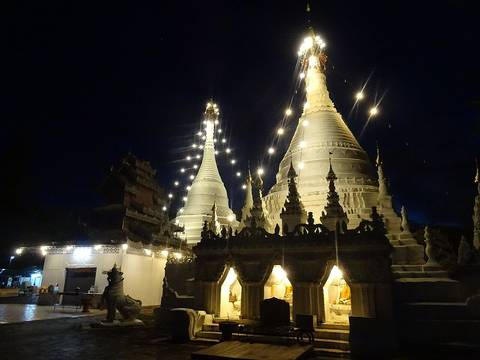

2 written up WatsShan spires, Burmese tin, Lanna teak. Three architectures inside one province, and the border explains all three.
Route 1095 Route 107 Route 107 Route 107 Route 107 Route 107 Route 108 Route 108 Route 108 Route 1263 Route 1088 Route 1096 Wat Chong Kham and Wat Chong Klang Wat Phra That Doi Kong Mu Wat Padhammachart Wat Suan Phrik Wat Ton Kwen Phra That Su Ba Wat Phra Phutthabat Tak Pha Wat Pa Sak Noi Wat Pong Pa Ueang Wat Pho Thong Charoen Wat Doi Chang Wat Ko Klang Wat Ton Pao Wat Charoen Rat Wat Bup Pha Ram Wat Pa Mueat Wat Wari Sutthawat Wat Phan Lang The Temple of Buddha Relics at Doi Pha Som Wat Huai Hok Wat Pathum Sara Ram Wat Sarakham Rangsan (Mueang Wa) Wat Buak Pao Wat Rong Meng Wat Ban Dong Charoen Chai Wat Mongkhon Wara Ram (Khang Nam) Wat Tha Don Kaeo Wat Mai Chonlaprathan Chu Chat Wat Umong (Suan Buddha Dhamma) Wat Pa Pao Wat Phra That Doi Wiang Wat Kongkaw Wat Phra That Doi Tham Wat Ku Kham Wat Ki Walae Luang Wat Rong Khum Wat Chimphli Mongkhon Wat Ban Dong Wat Tha Pong Wat Chom Chaeng Wat Doi Chom Chaeng Wat Hang Dong Wat Champalao Wat Champalao Wat Buppha Ram Wat Thong Fa Ham Wat Pa Tueng Rong Wua Wat San Pa Sak Won Urai Thamma Ram Wat Chimphli Wan Wat Mai Huay Sai Wat Ku Suea Wat Mae Tat Wat Doi Khum Ngoen Wat Phra That Doi Ngu Wat Si Bun Chu Wang Hai Wat Ban Luai Wat Phra Yuen Wat Mahawan Wanaram (Phra Rod) Wat Chang Rong Wat Cham Thewi Wat San Pa Yang Luang (Khruba Inthon Phra Khru Panya Tham Wat)) Wat Suan Dok วัดไก่แก้ว Wat Nong Seng Wat Mueang Nga วัดฉางข้าวน้อยเหนือ Wat Pa Sang Ngam Wat Nong Pham Wat Ra Yamun Wat Phot Mongkhon Wat Sima Ram Wat Fa Lang Wat Phrathat Doi Noi Wat Mae Pang Luang Pho To Wat Mokkhanlan Wat Yang Moen Wat San Kangpla Wat Tham Pha Plong Wat Prasat Tham Wat Pa Sala Pang Sak Wat Hong Kok Wat Rong Sao Wat Ko Klang Wat Ban Lao Pra Jao Ta Keo Wat Don Tong Wat Nong Koet Wat Ko Kha Wat Niwat Phraison Wat Amphawan Wat Pa Charoen Tham Wat Sri Sawat Wat Don Chai Wat Ton Phueng Wat Banmon Wat Pa Pae Wat Phra That Doi Mon Ching Wat Chiang Chom Wat Mae Kha Chan Wat Tha Khum Ngoen Wat Mu Poeng Wat Pra Non Mon Chang Wat Mueang Chi Luang Wat Ban Kong Wat Phanta Koen Wat Amphawan Wat Nam Tok Mae Sa Wat Thung Khaotok Luang Loong Meditation Centre วัดศรีงาม Wat Ban Pok Wat Mai Ard Ban Mae Nga Monks Residence Wat Pa Dhammanimit Wat Aran Ya Wat Wat Kamat Wat Tham Bua Tong Wat Prathadjomjaeng Wat Khiri Khet (Thung Pong) Wat Pracha Kasem Phraphutthabat Si Roi Wat Sahatsa Sakhun (Phan Tao) Wat Santong Wat Pakluay Wat Kong Khak Luang Wat Pong Pa Wat Nong Sai Wat Ban Mai Chedi Liam Temple Wat Phra That Sai Thong Wat Phothi Phichit Phra That Up Kaeo Wat Up Kaeo Wat Long Ku Kam Wat Huai Pong Wat Pa Fang Wat Long Wat Nong Baem Way Ko Mong Wat Siri Rat Wat Doi Gat Wat Tha Doi Klang Wat Thepha Ram Wat Samakkhi Thamma Ram Wat Mae Rong Noi Wat Nam Rim Wat Pra Tat Doi Tae Wat Tha Suan Luang Wat Tin Doi Wat Phatan Phra That Doi Yao Wat Chai Pradit Wat Muang Ma Neua Wat Pa Daet Wat Si Chum Wat Phayak Noi Wat Buak Khrok Noi Wat Nam Phrae Wat Wang Than Wat Phaya Kot Ana Kaeo Phothiyan Wat Siri Mang Khla Ram Wat Lak Pan Wat Thong Satcha Wat Chang Si Wat San Pa Yang Nom Wat Si Song Mueang Wat Pamai Daeng Wat Mueang Sattra Luang Wat Chedi Sathan Wat Ma Ong Nok Wat San Pa Sak Wat Nong Bua Wat Tan Lan Wat Nong Ubosot Wat Mae Tao Hai Wat Mae Ho Phra Wat Phra That Su Nan Tha Wat Thep Nimit Nan Tha Ram Wat Ban Pong Wat Rom Luang Wat Hua Dong Samakkhi Tham Wat Nong Sae Wat Mae Tae Wat Siri Mongkhon Wat Mae Yoi Luang Wat Yang Piang Wat Mae Yak Wat Mae Aen Wat Padaeng Wat Mueang Kai Wat Nong Kham Wat Nan Tha Ra Wat Pong Noi Wat Prathan Phon Wat Pa Tan Wat Namtok Mae Klang Wat Nin Prapha Wat Pak Kong Wat San Kha Yom Wat Rong San Wat San Kha Yom Wat Saengsawang Wat Nong Hiang Wat Huai Din Chi Wat Mai Nong Hoi Wat Pong Cho Wat Sila Mongkhon Wat Mongkhon Wari Wat Khan Tha Ram Wat Sai Mun วัดทุ่งท้อ Wat Doi Mae Pang Wat Don Chedi temple Wat Sri Don Chai temple Wat Chai Mongkhon Wat In Thra Ram Brother of Doi Kum Wat San Khaokhaep Klang Wat Wiwek Wana Ram Wat Maerem วัดปวงคำ วัดกองกาน วัดพุทธเอิ้น Wat Tha Kham Wat Nong Bua Luang Wat Nong Hok Wat Ban Mai Pang Toem Wat Tham Nam Hoo Wat Mae Sapok Wat Wi Mut Ti Karam Wat Mae Ead Wat Intraram Wat Wang Pha Pun Wat Ku Kham Wat Ubosot Wat Pang Hai Wat Phra That Doi Ku Wat Pa Heo Wat Ban Khun Wat Suphan Rang Hi Wat Mai Sawan Wat Huai Pong Wat Pa Suan Tham Rot Wat So Pha Ram Wat Phrabat Tinnok Dhamma Simanta Meditation Center Wat Mae Mae Wat Mongkhon Setthi Wat Ton Chok Wat Ban Piang Wat Rong Wua Daeng Wat Rong Sak Wat Huai Bong Wat Thung Yao Wat Tha Thung Luang Wat Pong Mae Lop Wat Nong Phueng Wat Prathat Doi Wiang Chai Mongkon วัดป่าห้า วัดพระธาตุม่วงเนิ้ง Wat Dongmafai Wat Thung Daeng Wat Ban Huai Bong Wat Che Tiya Banphot วัดบ้านหลวง วัดเขื่อนผาก วัดสันนาเม็ง อนุสรณ์สถานบรรลุธรรม หลวงปู่ขาว อนาลโย Wat Pratu Khong ซุ้มประตู วัดศรีมหาโพธิ์ San Chao Pracham Muban Pa Taeng Phra That Sop Waen Wat San Sai Ton Kok Wat Phra That Pu Kam Wat Sala Wat Chang Phian Wat Pasak Wat San Ton Ka Wat Ton Pan Wat Bo Pha Waen Wat Chai Mung Kun Wat Tahm See Nin Wat Buak Khrok North Wat Pa Kluai วัดบ้านแม่เกาะ Wat Kio Lom Wat Phra That Doi Liam Wat Nong Ap Chang Wat San Na Meng Wat Tam Wua Forest Monastery Wat Buak Khrok South Wat Weluwan Wat Huan Kan Wat Don Kaeo Wat Cham Pi Wat Mongkhon Rattana Ram Wat Sob Pong(Meena Nantanaram temple) วัดป่าท่าสุด วัดปางกึ้ด Wat Wichit Wari Wat Pa Khoi Nuea Wat Si Ping Chai Wat San Na Meng Wat Hua Fai Wat Ban Phueng Wat Nong On Wat Thap Dua Wat Mae Thalai Kham วัดใจ(ดงเทวี) Wat Muang Kham Wat Rat Pradit Wat Phra Non Sop Khap Wat Sai Mun Wat Nong Lom Wat Si Rungrueang Wat Sai Mun สำนักสงฆ์ร่มไทรคำ Wat Aranyawiwake Wat Nam Kat Wat Changthong Wat Pong Wat San Makiang Wat Amphawan Wat Suk Kasem Wat Anagami Wat Saen Luang Wat Ton Hiao Wat Chaichana Mongkhon สมาคมพุทธภาวนาบุญสถาน Wat Mai Mongkhon Chai Wat Nong Sae Wat Doi Ploi Nok Wat Phra Phuttabat Phanam Wat Phut Nikhom Wat Nong Ubosot Wat Nong Ku Kham Wat Huai Sai Sa Li Si Sai Mun Wat Phrachao Ton Luang Wat Pradu Wat Huai Ngu Wat Pa Waen Wat Chet Tha Won Khup Sala Phrachao Morakot Niramit Wat Ton Phueng Wat Chai Lap Wat Thung Kiang Wat Thung Khi Suea Wat Tan Chet Ton temple Buddha statue Ban Mae Tho Sanctuary Bouddhist temple Wat Pa Tamm Saeng Tong Wat Santisuktoodongsathan Wat Pa Pa Deng (Thammikaram Monastery) Wat Pah Pa Den Wat Mueang Kuet Wat Aranyawas Wihan Luang Pho Than Chai Lord Buddha Luang Temple Wat Moo Boon Wat Pra That Chom Thong วัดทุ่งสีทอง Wat Kung Kaeng temple Wat Mae Lana House of Spirit Wat Sai Khao Wat Thung Pong White Buddha Tham Pak Sung Monastery Wat Tham Pak Piang Wat San Pong Wat Pa Bunnak wat chiang Ganesha Shrine Wat Huai Po Wat Pa Huai Som Suk Wat Pa Na Boon temple Wat Po Ti Nimit temple Wat Doi Thes Rangsri temple Wat Siri Mongkol Kromkiat Shrine Doi Mon Angket Wat Racha Kru temple Wat Pang Fueang Wat Seang Mong Kol(Pong Tong) temple พระบรมราชานุสารีย์พระเจ้าพรหมมหาราช Wat Ming Mongkol สำนักสงฆ์บ้านขุนช่างเคี่ยน Ban Tub temple Wat Phrathat Sam Liam อนุสรณ์สถานบรรลุธรรมหลวงปู่ขาว อนาลโย Wat Thung Yao Buddhist temple วัดพระธาตุศรีสบเงา Wat Mae Hoi Nai พุทธสถานวัดน้อยศรีลาภรณ์ Wat Ban Lom ศาลเจ้าเล็กๆ Wat Huai San temple Wat Nong Krok temple Wat Phra That Doi Ku temple Wat Phra Phutthabat Pang Daeng Wat Pha Deng temple Wat Mae Nam Khaem temple Wat Mar Sae temple Wat Pang Lan temple Wat Chom Chaeng Wat Pa Ming Muang Boddhisompon temple Wat Mae Su Ya temple Wat Mae Surin temple Wat Luang Khun Win Phra That Na Pang วัดบัวนาค (วัดแม่โจ้) สำนักสงฆ์แก่งปันเต๊า Wat Damrongkhatham (Huay Luang) Wat Doi Udom Tham White Temple Wat Phra That Na Yang Phrathat Mueang Noi Ariyasathantham Haeng Panya Foundation Wat Mae Khao Wat Tha Thum Wat San Kha Yom Wat Om Long Wat Sahakon (Wat Doi Nang) 400 th Commemoration of King Naresuan Royal Pavilion Wat Wiang Haeng Wat Pa Thara Phirom Wat Khanti Wana Ram Doi Mongkol Sathan Forest Hermitage Wat Pa Phai Wat Sop Loen Wat Ban Pao Wat Kai Noi Wat Pang Muang Wat Ton Lung Udom Tham สำนักสงฆ์ป่าพะโอ Wat Si Don Mun Wat Mae Phae Wat Ban Mae Loai Wat Pa Yang Nad Wat Doi Thaen Phra Wat Pa Ban Huai Lao Wat Kong Khak Noi Wat Tham Suea Maze วัดป่ารัตนสุวรรณ Wat Khao Thaen Noi Wat Phuttharam Ban Waen Wat Naboon Thammaram Thep Chetiyachan Temple Chao Pho Chaeng Katam Shrine Wat San Sai Tohn-Gawk Wat Phra That Chum Mueang Wat Huai Sing Wat Ban Rai วัดจอมแจ้ง Wat Ban Ma Wat Pa Huai Duea Pong Duead Forest Hermitage Wat Huay Phak Kut วัดพระธาตุจอมกิตติ Wat Dong Ruesi (Lamphun) Sathan Pathiputtham Pong Sila Wat Phrathat Doi Hang Bat Khuong Singh Wat Phrachao Saliam Wan Wat Pa Rak Thai วัดม่วงคำ วัดอัมพวัน วัดป่าหก วัดหลวง วัดฮ่อมต้อ วัดบ้านแวน Wat Maekhu Wat Doi Saket Wat Phra Singh Wat San Ma Hok Fa Wat San Pa Kha Wat Tha Ton Kwao ร้องกองข้า Chiang Mai Buddhist Shrine Wat Mae Hat Luang Wat Jetiyanusorn Wat Don Chan Wan San Khong Wat Pa Phaeng Wat Don Pin Wat Chiang Man Wat Lang Ka Wat Nong Khong Wat Ban Klang Wat Pu Loei Wat Phaya Chom Phu Wat Rong Tham Wat Buppha Wat Tha Duea Wat Ton Phueng Wat Si Don Mon Wat Phatthana Tuayang Sao Hin Temple Wat Si Kham Chom Phu Wat Dong Khilek Wat Thaworangsee Wat Maehoyngern Wat Hiran Ya Wat Wat Mae Pong Wat Chok Chai Wat Kan Ni Thaya Ram Wat Chai Phrueksa Wat Wat Dao Dueng Wat Pong Chang Khot Wat Roi Phrom Wat Ko Sa Liam Wat Si Sai Mun Wat Mae Hat Wat Buak Khang Wat Ya Phai Wat San Kha Yom Wat Sa Laeng Wat Si Don Chai Wat Huai Yap Wat Huai Ai Wat Phrathat Doi Suthep Racha Worawihan Wat Si Chun Wat Mae Sa Lap Wat Buppha Ram Wat Dokeung Wat Chomphu Wat Ton Chok Lang Wat Phra Khong Ruesi Wat San Ton Pao Wat Pooka Nua Wat Ban Tho Wat Mueang Khon Wat Bon San Si Song Mueang Temple Wat Nam Cho Wat Roi Chan Wat Chang Kham Wat San Ton Kok Wat Ku Daeng Wat Hong Ao Kham Wat Khok Mupa Wat Mueang Wa Wat Mueang Len Wat Si Chaya Ram Wat Pa Bong Wat Chomphunut (Wang Pong) Wat Lat Thuan Ramib Wat Thawon Tham Wat Si Sai Mun Wat Pa Lan Wat Pham Na Tuayang Wat Suphan Wat Bo Chong Wat Bet Khit Cha Wat Wat Pra Sat Wat Nat Samran Wat Ban Pang (Khruba Si Wichai) Wat Tong Kai Wat Sun Ton Meung Nue Wat Chetupon Wat Intha Wichai วัดอินทราพิบูลย์ วัดหนองบัว Wat Pa Lan Wat Pu Kha Tai Wat Si Pradu วัดสันพระเนตร Wat Si Soda (Phra Aram Luang) Wat Chammathewi Wat Tamnak Tamma Nimit Wat Chedi Mae Khrua Wat Ram Poeng Wat Don Mun Wat Ubosot Wat Sri Dornchai Wat San Si Wat Si Koet Wat San Pa Tong Wat Rong Wua Wat Khon Phueng Wat Pha Pha Wat Nam Phrae Wat Pa Dara Phirom Wat Muen Ngun Gong Wat Tham Phra Boran Wat Phra Phutthabat Si Roi Wat Nong Gai Wat Doi Ti Wat Pha Bong Wat Si Koet Wat Tung Yu Wat Chai Phrakiat Wat Phan Tao Wat Chedi Luang Wat Tha Mai I Wat Tha Luk Wat Rong O Wat Sai Moon Myanmar Wat Saimoonmuang Wat Klang Tung Wat Pa Yang Wat San Sai Luang Wat Potaram Wat Sri Sai Moon Wat Pa Phai Si Khong Wat Phun Ohn Wat Tha Ton Ngio Wat Mae Ka Wat Nong Tao Kham Wat Phatthana Tua Khang Wat Ban Luk Wat Phratu Pa Wat Not Ri Bua Ban Wat Nam Hoo วัดทาดอยแช่ Wat Nong Pa Sae Wat San Sai Wat San Ton Muang Wat Piyaram Wat Doi Kaeo Wat Kaotanluang Thep Montien Wat Ton Pheung Wat Si Pho Ngam Wat Ru Ba Chao Thueang Wat San Don Mun Wat Pa Kam Wat Bosang Wat Mo Kham Tuang Wat Saen Mueang Ma Luang Wat Wang Luang Wat Ri Ka Ran Wat Nong Pa Khrang Wat Wang Thong Wat Si Bun Yuen Wat Buabok Wat San Pa Khoi Wat Ban Tong Wat Huai Ma Kong Wat Pa Tueng Wat Chet Wan Thamma Ram Wat Doi Kyson Wat San Kam Phang Wat Nong Ngueak Wat Tha Wang Phrao Wat Tha Sa Wat Pa Daet Wat Nong Wai Wat Si Sawang Wat San Pu Loei Wat Su Wan Na Wat Wat Nan Ha Ram วัดหเีประดิษฐ์ Wat Lat Thi Wan Wat Som Det Doi Noi Wat Ban Luang Wat Ban Pong Wat Pong Yaeng Chaloem Phra Kian Ti วัดธาตุกลาง Wat Thatkam Wat Saen Thong Wat Nong Chio Wat Ban Khwang Wat Khilek วัดศรีก่อเก๊า Wat Chai Mong Don Walikarma Temple (Ban Po Temple) Wat Nong Baen Wat Si Photharam Wat Buppharam Wat Duang Di Wat Pa Poe Chedi Liam Temple Wat Thephin Thra Ram (Pa Bong) Wat Lam Chang Wat Ban Noi Wat Nong Plah Munn Wat Sri Mongkontum Wat Ban Kad Wat Ku Man Mongkhon Chai Wat Ko Pracham Hong Wat Pa Sak Luang Samnaksong Doi Pui Phu Phing Luang Pu Phai Rot Wat Mueang Mang Wat Chet Lin - Wat Jedlin Wat Tamnak Suankhwan Sirimangkalajarn วัดศรีบุญเรือง Wat Hua Rin วัดต้นแหมหลวง Wat Rachamontian Wat Pha Lat Wat Pa Daeng Wat Phra That Thong Tum Wat San Sai Mun Wat Nong Un Wat Pa Hiang Wat Pa Lan Wat Pak Long Wat San Kwang Kam Wat Muen San Wat Dam Gaew Wat Surin Tharat Wat Phrathat Chomkitti Wat Cheatawan Wat Saen Fang Wat Lan Tong Wat Duang Dee Wat Sri Suphan Sala Tham Wat Phra That Doi Kham Wat Phratat Doikham Wat Luang Wat Jed Yod Wat Tonyang Huang Wat Rong Don Chai Wat Phra Chao Ton Luang Wat Muang Ton Wat Jao Chai Wat Thammasangwet Wat Fon Soi Wat Amararam (Sanum) Wat San Ki Wat Suan Dok Monk Chat Wat Rong Khi Lek Wat Ton Phueng Wat Nong Krai Luang Wat Phrabat Huai Tom Wat Si Mung Mueng Wat Si Lom Thai Lin Foawian Chedi Wat Nakha Sathit Wat Si Bun Rueang Thudongkhasathan Lanna Meditation Center Wat Thao Bun Rueang วัดพระธาตุดอยคำ Wat Si Maha Pho สำนักสงฆ์ไตรภูมนิมิตร Wat Rang Si Sutthawat Wat Pak Thang Wat Tha Sa Toi Wat Mahawan Wat Thung Tom Wat Ban Klang Wat Wut Thi Ra Sot Wat Chai Sathan Wat San Pa Liang Wat Chang Kham Wat Muen Larn Wat Dokkham Wat Puak Chang Wat Phan Tong Wat Loi Kroh Wat Chang Kong Wat Pha Khao Wat Muentoom Wat Phra That Hariphunchai Woramahawihan วัดนากลาง Wat Phra Phuttabat Phanam Wat Buak Pet Wat Tha Kham Wat Don Pin Wat Buak Khrok Luang Wat Pa Heo Wat Chan Thara Wirot Wat Mae Phuak Wat Mae San Ban Luk Wat Dok Dang Wat Chiang Khang Wat Maetaman Wat San Klang Tai Wat San Klang Nuea Wat Chai Sri Phoon Wat Prasat Wat Phra No Pa Ket Thi Wat San Luang Wat Mongkhon Wana Ram Wat Panping Wat Umong Maha Therachan Wat San Sai Mun Wat Phang Yoi Wat Don Chuen Wat Mon Ruesi Wat Hung Laeng Wat Sop Tia Wat Thung Pa Ket Wat Si Don Chai Wat San Ma Krut Wat Suk Wi Weka Ram (San Sai Nuea) Wat Hua Fai Wat Mae Rim Wat Kong Lom Wat Uttaram Wat Tham Chiang Dao Wat Pa Bong Wat Phon Hop Pra Kit Wat Pa Kham Wat Phra That Mae Yen Wat Klang Wat Mueang Sattra Noi Wat Si Bun Rueang Wat Fa Ham Wat Pak Mueang Wat Nam Bo Tip Wat San Pong Wat Pa Khae Yong Wat Don Chai Wat San Khue Wat Chaimongkol Wat San Klang Wat Pa Phrao Nai Wat Dubphai Wat Phra That Sa Li Bun Reung วัดบ้านโฮ่ง Wat Khuang Sing Wat San Tai Wat Phuak Taem Wat Mai Yang Khram วัดบ้านโป่ง วัดเด่นสารภี วัดท่าเกวียน Wat San Pa Sak Wat Thung Pui Wat Den Sa Li Sumueng Kaen Wat Lak Pa Daeng Loha Prasat Sri Mueang Pong Wat Mae Faek Luang วิหารใหญ่ วัดบุพพาราม Wat Nong Du Wat Rong Khut วัดวังจำปา Wat Nong Khong Wat Ku Bia Wat Doi Khamo (Bo Nam Thip) Wat Si Chai Chum Wat Nantaram Wat Langka Wat Pa Tueng Wat Pa Ngae Wat Pa Pao Wat Chae Chang Wat Kritsana (Doi Yao) Wat Duangdee Ho Monthian Tham Wat Nong Chong Wat Phu Din Wat Ong Ko Muang Wat Nam Cham Wat Si Bun Rueang Wat Phra Non temple Wat Kam Ko Wat Up Khut Wat Phai Rot Na Wang Wat Mae Samae Wat Si Bang Wan Wat Mueang Lang Wat Arun Niwat Wat Ket Karam Wat Ban Tho Wat Pa Khoi Tai Wat Nong Chang Khuen Wat Won Wet Wi Sit Wat Pa Ngio (Khru Ba Thanchai) Wat Wang Sing Kham Wat Hua Lim Wat Sa Kaew Wat Hong Hiang Huai Cho Temple Wat Si Suphan Wat Nam Khong Wat Sop Poeng Wat San Pa Tueng Wat Prakat Tham Wat Sa Luang Nok Wat Long Duea Wat Si Ping Chai Wat U Thum Phra Ram Wat Pha Deua Wat Khua Mung วัดจองกลาง วัดจองคำ Wat Phra That Doi Kong Mu Wat Payang Wat Phrom Wana Ram Wat Si Don Chai Wat Si Pradit Wat Nong Si Chaeng Wat Pa Tung Ngan Wat San Kha Yom Wat Kio Muen Wat Ban Thi Luang Wat Su Wan Na Ram Wat Ram Poeng (Tapotaram) Wat Nong Chang Wat Ku Rueang Wat Hua Dong Wat Chai Stan Wat Wang Sing Kham Wat Chan Thra Wat Wat Chang Kian Wat Nong Faek Wat Khuan Kama Stupa Crematorium Wat Phrathat Kong Loi Stupa Phrathat Pha Pha พระธาตุวัดคอนผึ้ง Phra That Ban Rai Wat Kong Sai Wat Umong Wat Thung Pong Wat Det Dam Rong Wat Hua Wiang Wat Rong Yao Wat Si Sai Mun Wat E Ran Wat Huai Som Wat Pa Chu Wat Siri Mang Khla Chan Wat Ou Sai Kham Wat Si Ping Mueang Wat Tham Pradit Sathan Wat Thon Kaew Wat Don Si Sa At Wat Man Na Ha Wan Pi Mook Wat Si Chomphu (Pa Tio) Wat Huai Bong Watthana Ram Wat Thip Wana Ram Wat Mae Na Pak Wat Pahin Wat Ban Pong Pureland Retreat Center Wat Ku Tao Wat Yang Kuang Wat Pa Chi Wat Doi Du Kham Wat Ku Mok Pradit (Ban Mo) Wat Si Klang Mueang Wat Tham Chai Wat Kamphaeng Ngam Wat Mae Long Wat Om Khut Wat Chang Khoeng Wat Saraphi Wat Si On Tai สำนักสงฆ์บ้านแม่ลอทะ Wat Phra Chao Meng Rai Wat Inthakhin Sadue Muang Wat Sam Pao วัดเมธัง Wat Pan Whaen Wat Lok Molee Wat Santi Tham วัดปันเส่า Wat Pan Sao วัดหนองคำ Wat Pa Phrao Nok Wat Puak Pia Wat Tha Srikhong สำนักสงฆ์บ้านแม่ตื่น ศาลาสำนักสงฆ์ วัดพันอ้น สำนักสงฆ์ทีสะหน่อ สุสานปิงห่าง Rai Stisumpanna Wat Dap Phai Wat Sai Mun Wat Jong Soong Wat Mantale Wat Saen Thong ศาลเจ้าพ่อข้อมือเหล็ก ศาลเจ้าพ่อข้อมือเหล็ก ศาลหลักเมือง ศาลหลักเมือง สำนักสงฆ์บ้านเบอลู่โค๊ะ Wat Mae Raem Wat Pa Pae Wat Mae Pang Wat Sawang Ban Thoeng Wat Nong Bua Noi Wat Mae Lao Wat Mae Yuak Buddha Dhamma Nonghor Monastery Wat Doi Akinchano temple Wat Sa Chatthan Wat Khu Na Nu Son Wat Doi Pra Djau Ton Luang Wat Khua Sung Wat Pa Lao Wat Pa Achan Tue Wat Chong Kham Wat Chong Klang Wat Mae HI (Wat Si Chum) Wat Prathat Doi Jomjaeng Wat Huai Kaeo Wat San Pu Loei Wat Huai Thong Wat Mon Chom Tham Wat Nong Hoi Wat Pak Kong Wat Si Don Chai Wat Pah Mu Mai Wat Nong Ma Jab Wat Pa Lan Wat Sri Moonrueang Wat Ubosot Wat Nong Nam Wat Ko Khoi หอสมเด็จพระพุทธปัญญาธรรม วิหารหลวงพ่อทันใจ พระครูบาเจ้าเทือง นาถสีโล Wat Faihin Wat Rattana Ram Mueang Klang Temple Wat Pa Tueng Wat Phan Ton Wat Huai Sai Wat Phra That Khiri Sam Rak Wat Si Bun Rueang Wat Suan Pa Wat Pa Ha Wat Pa Chi Wat Phra Non Khon Muang Wat Mon Luang Sa Wat Phra That Ha Duang Pa Tueng Ngam Monastery Wat Phra Chedi Wat Mae Kaet Noi Wat Pa Daet Wat Pa Phut Photchana Ram Wat Mae Kuang Phra That In Khwaen Wat Pah Saluang Wat Thung Yao Mai Hua Fai Temple Wat Pa Heo Central hall Moon hall Forest hall Bamboo hall Wat Huay Khiang Wat Kam Ko Wat Phatthasamphan Wat Muay Tor Wat Pha Nang Stupa ป่าช้าเบอลูโค๊ะ Wat Mon Huai Kaeo Wat Pa Tan Wat Sao Hin Mae Soi Temple Sob Soi Templw Huai Muang Temple Sammana Monastry Wat Naboon Thammaram Wang Daeng Temple Pa Chi Temple Wat Ban Phak Phai Wat Tham Wichien Wat Don Keaw Wat Chomthong Wat Don Keaw Wat Hua Fai Wat Chai Cha Na Pak Khlong Temple Wat San Sai Wat Siri Mongkon Wat Si Wari Sathan Wat Doi Pao Tha Nak Temple Wat San Pa Sak Ko Muang Temple Wat Chai Sathit (Pa Sao Luang) Chakkhamphimuk Temple สำนักสงฆ์สั้นเวียง Wat Kantharot Wat Ban Kao Wat Khong Khao Wat Song Khwae Wat Hua Kwang Wat Muang Chum Wat Mae Ka Luang Wat Mae Taeng Wat Thung Luang Wat Nong Bua Warawatwis Golden Stupa Wat See La Pa temple Wat Phra That Doi Tham (inner area) Wat Mok Cham Pae Wat Phra Phutthabat Pha Nam Wat Phrathat Sichai Wongsa Phra That Chedi Chinakesa วัดขะแมด วัดขะแมด วัดขะแมด วัดขะแมด วัดขะแมด วัดขะแมด วัดขะแมด Wat Huai Fai Wat Nang Liao Wat Famui Wat Tanjan Wat Mae Sa Luang Wat San Mueang Pracharam Wat Sopanaram Wat Si Chonlathan Wat Pa Tan Wat Mueang Kwak วัดศรีลังกา Wat Pha Mao Wat Ban Pa Pao Chedi Wat Phra Chedi Khao Wat San Rim Ping Wat Pa Huai Nam Rin temple Wat Phraphut Ban Tham Pa Phai Wat Suwan Khiri Mongkhon Chedi Wat Nong Hok Wat Nong Yaeng Wat Phra Pan Wat Pa Lan Wat Ton Tun Wat Sala Pongkwaw Wat Tha Pai Wat Lao Pao วัดบ้านปู วัดบ้านกลาง Wat Mae Tuen วัดบ้านก้อทุ่ง วัดก้อยืน วัดบ้านก้อท่า วิหารเล็ก วัดบุพพาราม Wat Chiang Yuen Octagonal Ubosot of Wat Chiang Yuen Wihan of Wat Chiang Yuen วัดนาทราย Wat Mahathat Chedi Si Wiang Chai Wat Phra That Si Chom Thong Wat Phuak Hong Wat Chang Taem Wat Pa Phaeng Wat Toi Noi 50 km 2 written up, 1,513 harvested from OpenStreetMap · © OpenStreetMap contributors 
วัดจองคำ และวัดจองกลาง
The pair of Shan-Burmese temples on Nong Chong Kham, the pond at the centre of Mae Hong Son town.

วัดพระธาตุดอยกองมู
The temple on the hill west of Mae Hong Son town. Two Shan-style chedis, a road to the top, and the view that gives the province its nickname.
What OpenStreetMap has 1,513 rows inside the corridor, 1,144 of them with a name. These are not written up, not checked, and not endorsed — they are what volunteers mapped, on 2026-09-19. An absence here is an absence from OpenStreetMap, not from the road.
First 400 of 1,144. The rest are in places.json .